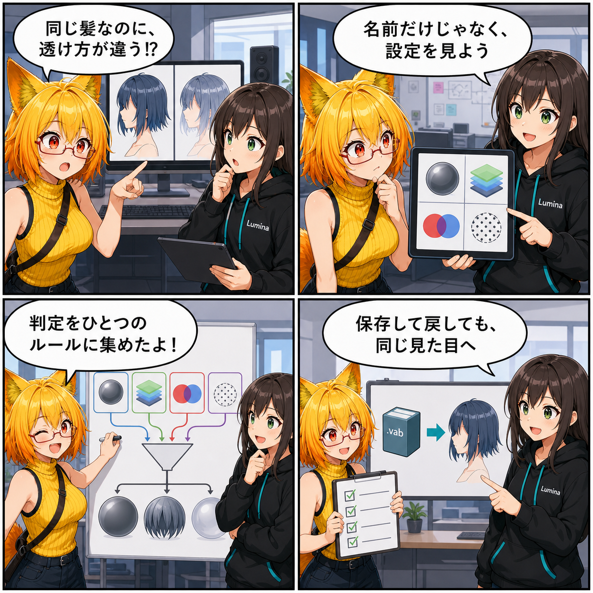

透け方の矛盾を、ひとつの判定へ
2026-08-09 の開発日記では、アバターの髪や服で使う「切り抜き」と「半透明」を、保存して読み戻した後も同じ見た目へ近づけるための材質判定を取り上げます。シェーダー名だけに頼らず、元データが宣言した表面種別、描画順、ブレンド方式、アルファテストをひとつの判断へまとめる作業です。

集計終了時点の最終HEADは c4bdd53（「Material変換の共通化とTexture重複排除を実装」）で、対象コミットは 0件 でした。確認時点の作業ツリーには未コミット差分があり、期間内に更新された13ファイルについて時刻とコード内容を確認しました。今回は、その中から材質の表面種別を正規化する処理を主題にしています。
今日の主題：材質の「自己申告」と実際の描画設定を照合する
髪の毛先や葉っぱのように、透明か不透明かをはっきり分ける表現は「切り抜き（Cutout）」です。一方、ガラスや薄い布のように向こう側をなめらかに透かすものは「半透明（Transparent）」です。見た目は似ていても、深度の書き込みや色の混ぜ方が違います。
lilToonの派生シェーダーでは、シェーダー名にTransparentと含まれていても、保存された表面設定は切り抜きという場合があります。逆に、分類フラグが切り抜きでも、保存済みのブレンド方式が半透明を示す古いデータもあります。ひとつの手掛かりだけで決めると、毛先が薄く透けたり、透ける布が硬い輪郭になったりします。
共通の正規化処理へ情報を集める
今回の差分では、材質の共通判定 VabMaterialCanonicalState が、元データの表面種別と「明示的なアルファテストか」という情報も受け取れるようになっています。
Editor側のConverterとアプリ内のVAB書き出しは、どちらもlilToon材質について、シェーダー名、RenderType、描画順、透明モード、ブレンド値、深度書き込み、アルファマスクなどを集め、同じ正規化処理へ渡します。入口が違っても、最終的なCutout・Transparent・Opaqueの判断と保存値をそろえる狙いです。
切り抜きを守りつつ、古い矛盾も救う
明示的なアルファテストや、切り抜き用の描画順を持つ材質は、保存済みブレンド値が透明寄りでもCutoutとして扱います。そのうえで、アルファテストではないのにブレンド値が半透明を示す古いデータはTransparentへ読み替え、必要な深度書き込みを残す分岐も加わっています。
単に一方を常に優先するのではなく、「切り抜きである根拠が強いか」「保存された実際の描画式と矛盾していないか」を順に確かめる構成です。
書き出して、読み戻すところまで検証する
テストには、透明モードが0でも宣言済みのTransparentやCutoutを維持する例、切り抜き用の描画順を守る例、アルファマスクを使うCutoutを守る例が追加されています。
さらにアプリ内書き出しでは、lilToonの切り抜き材質をVABへ保存して読み戻し、RenderType、描画順、深度書き込み、ブレンド値が期待どおりになるかを確かめる往復テストも加わっています。まだ未コミットの進行中作業ですが、判定だけでなく保存と復元の接続までコード上で確認できます。
ほかにも進んだこと
同じ集計期間には、PhysBoneのカーブ評価位置をBone比率とTransform比率へ分ける変更、Gravity Falloffや制限軸の互換性調整、指姿勢の比較処理なども更新されています。前日の主題だった上下移動の視覚回帰テストは期間前の更新だったため、今日の新しい実績には含めていません。
4コマの裏話
4コマでは、同じ髪材質なのに保存経路で透け方が変わる違和感から始めます。ルミナが名前だけで決めないよう提案し、ろひが表面種別、描画順、ブレンド、アルファテストを同じ判定へ集合。最後はVABへ書き出して読み戻す往復確認で締めます。
今日のまとめ
2026-08-09の記事対象期間では、新しいコミットはありませんでした。その一方でローカル作業ツリーでは、lilToon材質のCutout・Transparent・Opaque判定を、Editor変換とアプリ内書き出しで共通化する作業が進んでいました。
見た目を守るには、シェーダー名、分類フラグ、描画順、ブレンド値のどれかひとつを正解にするだけでは足りません。複数の手掛かりをひとつの規則へ集め、保存して戻した後まで確かめることが、互換性の土台になります。
本日のひとこと： 透け方の正解は、名前より中身にある。